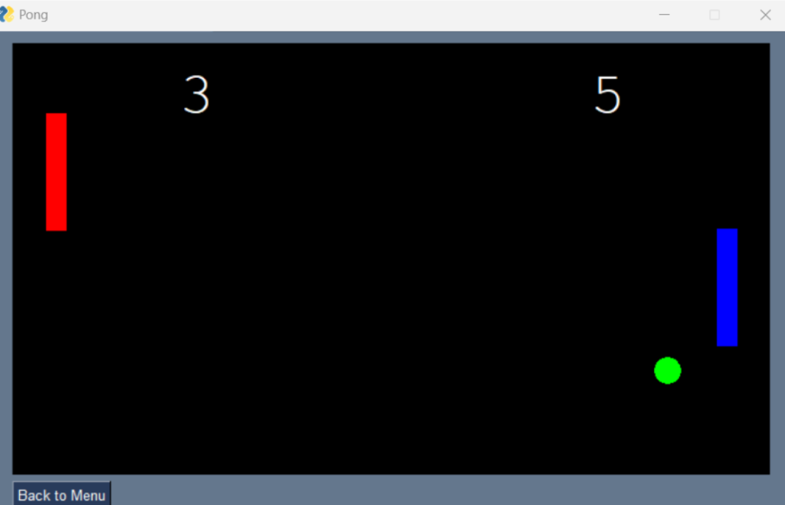
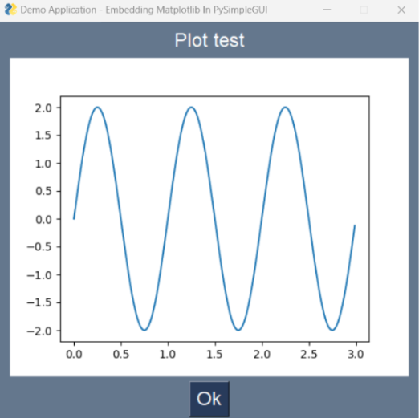
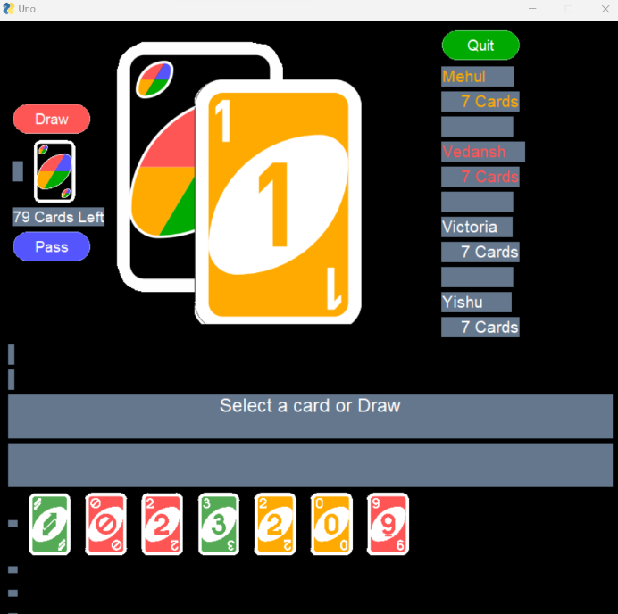
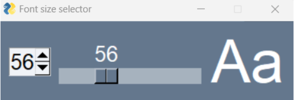
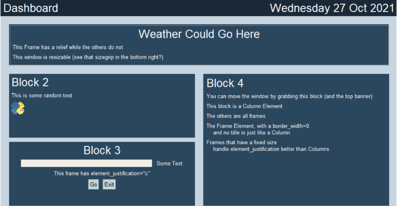
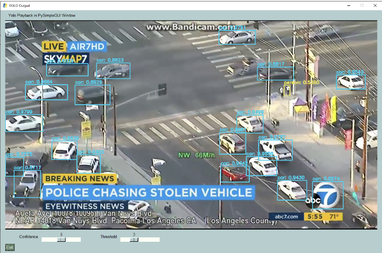

Introduction to PySimpleGUI
PySimpleGUI is a Python library designed to make the creation of graphical user interfaces (GUI) quick and accessible to beginners.
It wraps tkinter, Qt, WxPython, and Remi in a single, well-documented API that allows for simpler GUI creation using the Python programming language.
Creating a Simple Popup Menu with PySimpleGUI
One of the simplest yet most useful features in PySimpleGUI is the popup window. Popups can be used to display messages, ask for user input, or provide simple interactions. Here’s how you can create a basic popup menu:
import PySimpleGUI as sg
# Simple popup
sg.popup('Hello World!', 'This is a simple popup menu.')
When you run this code, it will display a popup window with the text "Hello World!" and a subtext "This is a simple popup menu." with an OK button to close it.
Installing PySimpleGUI
Before you can use PySimpleGUI, you need to install it. If you have pip installed, you can easily install PySimpleGUI by running the following command in your terminal or command prompt:
pip install PySimpleGUI
After installation, you can import PySimpleGUI in your Python script and start creating your GUIs.
Here are examples of what is possible with PySimpleGUI:
-
Pong. According to Wikipedia,
Pong is a table tennis-themed
twitch arcade sports video game,
featuring simple two-dimensional graphics,
manufactured by Atari and originally released in 1972.
Pong was the first commercially successful video game,
and it helped to establish the video game industry
along with the Magnavox Odyssey.

-
Matplotlib
MatplotLib is used for making plots, graphs, and charts, helping in visualizing data in a form that is easy to understand and interpret.

-
Uno

-
Sliders

-
Custom Dashboard
Dashboards provide a more user-friendly way to interact with complex data and systems. nteractive elements in a dashboard
can make a project more engaging, allowing users to manipulate data or control parameters and see the effects in real-time.
PySimpleGUI offers a straightforward way to create custom GUIs quickly.

-
Computer Vision
Computer vision is a field of artificial intelligence that trains computers to interpret and understand
the visual world. Using digital images from cameras and videos and deep learning models, machines
can accurately identify and classify objects — and then react to what they “see.”
This particular system is using an object detection algorithm (YOLO - You Only Look Once) to
identify and locate vehicles in the video. It provides bounding boxes around each detected vehicle
and includes a confidence score that indicates the algorithm's certainty that the identified object
is a vehicle. The confidence score is a probability between 0 and 1, with numbers closer to 1 indicating higher confidence.

The possibilites of what can be done with PySimpleGUI are endless! In the next page, we will explore an implementation of WordMatch that uses PySimpleGUI and the random library.
Documentation and Resources
For more information about PySimpleGUI and its features, visit the official PySimpleGUI documentation. It offers a comprehensive guide and examples to help you build GUIs with Python easily.